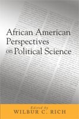

African American political scientists speak out about their discipline, academic issues and racism in the profession
African American political scientists speak out about their discipline, academic issues and racism in the profession


 African American political scientists speak out about their discipline, academic issues and racism in the profession
African American political scientists speak out about their discipline, academic issues and racism in the profession

|  |
African American Perspectives on Political Scienceedited by Wilbur C. Rich, foreword by Charles V. Hamiltonpaper EAN: 978-1-59213-109-9 (ISBN: 1-59213-109-3) |
"This book should be read by all political scientists concerned with the future of political science and the future of our society. There is no other book that addresses the issues raised here. And it is sure to be controversial (if read by mainstream political scientists) because it calls into question some of the classic works in the discipline by some of its 'most prominent scholars.'"
—Michael Preston, University of Southern California
Race matters in both national and international politics. Starting from this perspective, African American Perspectives on Political Science presents original essays from leading African American political scientists. Collectively, they evaluate the discipline, its subfields, the quality of race-related research, and omissions in the literature. They argue that because Americans do not fully understand the many-faceted issues of race in politics in their own country, they find it difficult to comprehend ethnic and racial disputes in other countries as well. In addition, partly because there are so few African Americans in the field, political science faces a danger of unconscious insularity in methodology and outlook. Contributors argue that the discipline needs multiple perspectives to prevent it from developing blind spots.
Taken as a whole, these essays argue with great urgency that African American political scientists have a unique opportunity and a special responsibility to rethink the canon, the norms, and the directions of the discipline.
"Professor Rich has brought together a group of talented scholars to address a critical issue in the world of American scholarship. This volume moves in the direction of Hanes Walton's Invisible Politics, exposing the hidden racial dimensions of politics in the United States. As Rich points out, American political scientists have systematically and almost universally refused to incorporate issues of race into their studies of political phenomena. This volume will have a critical impact on the rolling back of obstacles to the penetrating analysis of race as a factor in American political mobilization and public policy-making."
—William Nelson, Ohio State University
“Individual essays…offer incisive critiques on the limits of the dominant methodologies and available data in answering questions regarding race and American politics. The sections of the book exploring the impact of race on research in international relations and globalization are very strong and provide much needed nuance to the broad policy debates in these areas. Editor Rich contributes an illuminating essay on the problems facing African Americans within the discipline. This is a worthy contribution to the literature on the study of African American politics, the discipline of political science and more broadly the study of politics in America. Highly recommended."
—Choice
Also available in e-book
Section 1: Race and Political Scientists
1. Ernest J. Wilson III and Lorrie A. Frasure “Still at the Margins: The Persistence of Neglect of African American Issues in Political Science, 1986-2003”
2. Hanes Walton, Jr. and Robert C. Smith “The Race Variable and the American Political Science Association's
State of the Discipline Reports and Books 1907-2002”
3. Wilbur C. Rich “African American Political Scientists in Academic Wonderland”
Section 2: Globalization and Transnational Politics
4. Ollie A. Johnson III “Black Politics in Latin America: An Analysis of National and Transnational Politics”
5. Vernon D. Johnson “Globalization and the Study of Development”
Section 3: Civic Engagement and Voting
6. Melissa V. Harris-Lacewell “Political Science and the Study of African American Public Opinion”
7. Evelyn M. Simien “A Black Gender Gap? Continuity and Change in Attitudes Toward Black Feminism”
8. Andrea Y. Simpson “Going It Alone: Black Women Activists and Black Organizational Quiescence”
9. Martin Kilson “Political Scientists and the Activist-Technocrat Dichotomy: The Case of John Aubrey Davis”
Section 4: Political Institutions
10. Kenny J. Whitby “Dimensions of Representation and the Congressional Black Caucus”
11. Barbara Luck Graham “Toward a Critical Race Theory in Political Science: A New Synthesis for Understanding Race, Law and Politics”
12. Wilbur C. Rich “Presidential Leadership and the Politics of Race: Stereotypes, Symbols and Scholarship”
Section 5 The Subfields
13. Comparative Politics—Germaine A. Hoston, Ph.D. “Comparative Politics and Asia: Contesting Hegemonic
Inter-and Intra-Disciplinary Boundaries”
14. Public Administration—Lenneal J. Henderson,Jr. “Race and the Problem of Equity in the Administrative State: Implications for Political Science Theory and Methods”
15. Marion Orr and Valerie C. Johnson “Race and the City: The View from Two Political Science Journals”
16. International Relations—Errol A. Henderson “Navigating the Muddy Waters of the Mainstream: Tracing the Mystification of Racism in International Relations”
17. American Government—Katherine Tate, Kevin L. Lyles, and Lucius J. Barker “A Critical Review of American Political Institutions: Reading Race into the Constitional ‘Silence’ on Race”
18. Political Theory—-Jerry G. Watts “Political Science Confronts Afro-America: A Reconsideration”
 | Wilbur C. Rich is Professor of Political Science at Wellesley College. |
Political Science and Public Policy
African American Studies
Race and Ethnicity
© 2015 Temple University. All Rights Reserved. This page: http://www.temple.edu/tempress/titles/1760_reg.html.